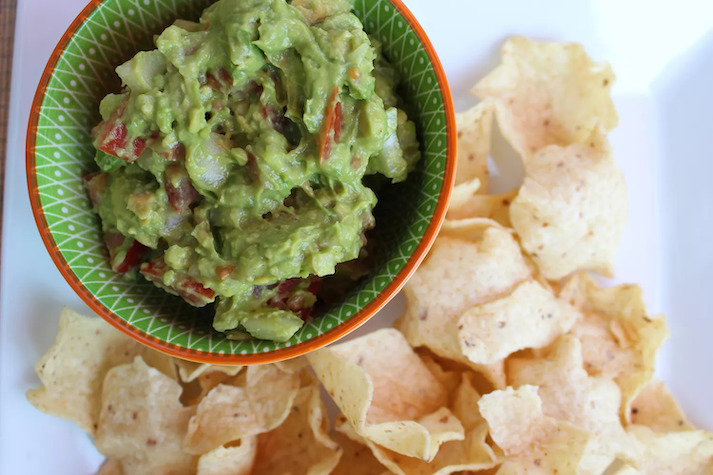

Easy Guacamole

Description
This easy guacamole recipe is quick and simple to make. Great with tortilla chips or as a topping for Mexican foods!
Ingredients
- 2 ripe avocados, peeled and pitted
- 1 small onion, finely chopped
- 1 ripe tomato, chopped
- 1 clove garlic, minced
- 1 lime, juiced
- salt and pepper to taste
Steps
- Mash avocado in a medium serving bowl. Stir in onion, tomato, and garlic. Season with lime juice, salt, and pepper.
- Cover and chill guacamole for 30 minutes to allow flavors to blend.
Home